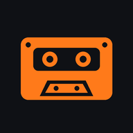

Løpespiller
Musikk til løpeturen. Shuffle fra en mappe, styres med headset, ingen reklame og ingen nett.
Én fil, ca. 40 kB. Etter nedlasting trengs aldri nett.
1. Last ned
- Trykk den oransje knappen over. Filen havner i Nedlastinger.
- Vil du ha den et fast sted, flytt den med Filer-appen, gjerne til musikkmappa di.
2. Åpne
- Åpne Filer-appen og finn
Lopespiller.html. - Trykk på filen og velg Chrome.
- Får du ikke åpnet den, eller vil du ha et ikon på hjemskjermen, bruk heller «Installer som app» lenger ned.
3. Bruk
- Trykk Velg mappe … og velg musikkmappa. Undermapper blir også med.
- Trykk ▶. Spilleren blander sangene og fortsetter til du stopper.
- Lås skjermen og løp. Musikken spiller videre i bakgrunnen.
Mp3, m4a, aac, ogg, opus, flac og wav fungerer.
Headset og låseskjerm
- Pause, neste og forrige styres fra headsettet, låseskjermen og varslingsfeltet.
- Hvilket tapp som gjør hva, bestemmes av headsettet (ofte: ett tapp = pause, to = neste, tre = forrige).
- Trykk ▶ i spilleren første gang etter at den er åpnet. Deretter tar headsettet over.
Godt å vite
- Musikken leses rett fra telefonen. Ingenting lastes opp, og spilleren bruker ingen datatrafikk.
- Den nedlastede filen kan som regel ikke huske mappa, så du velger den hver gang du åpner spilleren.
- Stopper musikken midt i turen? Slå av batterioptimalisering for Chrome i Android-innstillingene.
Alternativ: installer som app
Gir ikon på hjemskjermen og virker også uten nett. Her kan du lagre en standardmappe i appen, så du slipper å velge mappe hver gang.
Åpne og installerÅpne på wifi, trykk ⋮ i Chrome og velg Installer app eller Legg til på startskjermen.